Classes
0 class(es) passed
1 class(es) failed, 0 others
Tests
0 test(s) passed
1 test(s) failed, 0 others
Steps
102 log(s) passed
6 log(s) failed, 1 others
Classes
-
Running on Chrome Jan 27, 2022 12:42:02 failJan 27, 2022 12:42:02 Jan 27, 2022 13:17:07 0h 35m 4s+659ms
-
testJan 27, 2022 12:42:02 0h 35m 4s+647ms fail
-
clickloginJan 27, 2022 12:42:09 0h 34m 57s+842ms fail
Status Timestamp Details check_circle 12:42:15 PM enterData
Entered Value "useremailnew@yahoo.com" in yahooemail
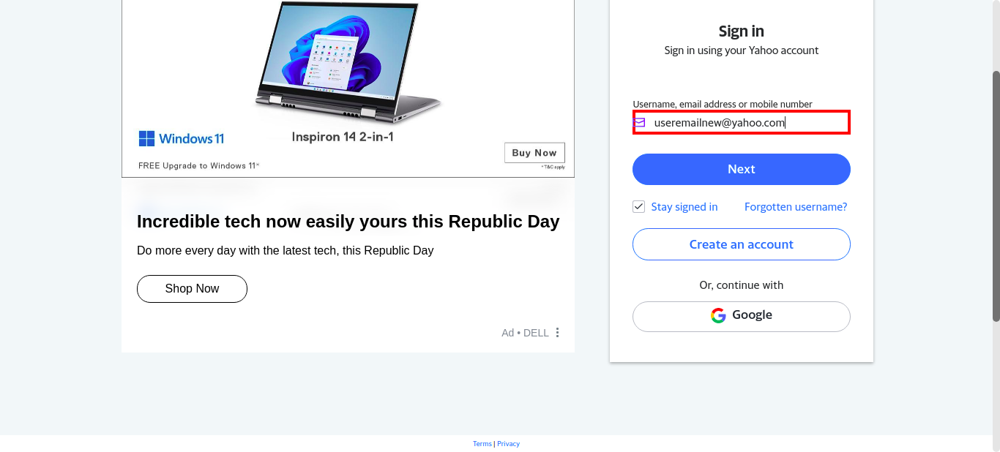check_circle 12:42:32 PM enterData
Entered Value "z*Bev~-Us5Y:Z?L" in yahoopasswd
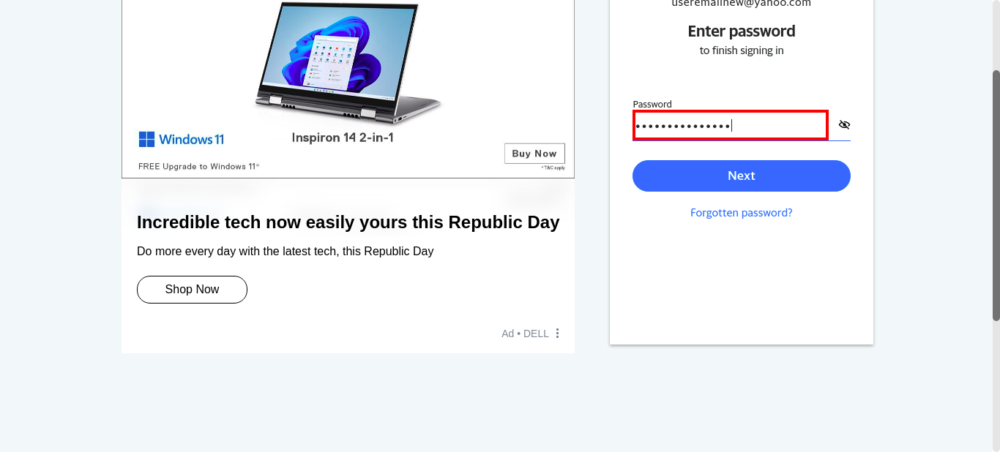check_circle 12:44:11 PM pressKey
TAB key pressed
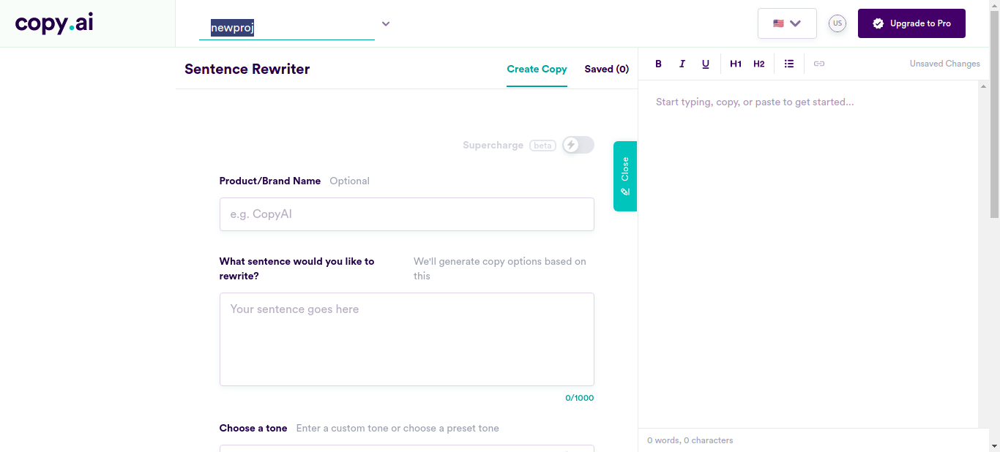check_circle 12:44:38 PM enterData
Entered Value "Ms. RiRi’s booty is a better investment" in SentenceField
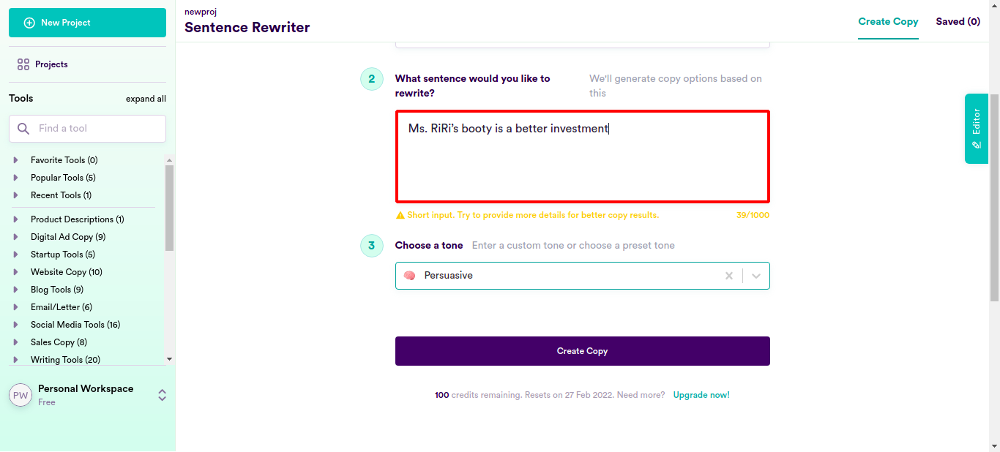check_circle 12:44:57 PM enterData
Entered Value "female soldiers a liability in combat?" in SentenceFieldcheck_circle 12:45:16 PM enterData
Entered Value "combat roles may become more dangerous with the addition of ladies." in SentenceFieldcheck_circle 12:45:35 PM enterData
Entered Value "women are now the equals of men but they aren't." in SentenceFieldcheck_circle 12:45:54 PM enterData
Entered Value "To believe that women can do as good a job as men in an illusion. " in SentenceFieldcheck_circle 12:46:14 PM enterData
Entered Value "If all women in a combat unit were to get pregnant together, that would cause a huge stress. " in SentenceFieldcheck_circle 12:46:34 PM enterData
Entered Value "female soldiers are a liability in combat" in SentenceFieldcheck_circle 12:46:53 PM enterData
Entered Value "the presence of females in the army needs to be reconsidered because they ""do not fight as well as their male counterparts""" in SentenceFieldcheck_circle 12:47:13 PM enterData
Entered Value "women make poor soldiers." in SentenceFieldcheck_circle 12:47:32 PM enterData
Entered Value "A high level of emotivity and significant involvement with fashion are found in women" in SentenceFieldcheck_circle 12:47:51 PM enterData
Entered Value "Men are instinctive protectors" in SentenceFieldcheck_circle 12:48:10 PM enterData
Entered Value "A man's center of balance is behind his body" in SentenceFieldcheck_circle 12:48:30 PM enterData
Entered Value "Women have a center of balance right between their legs." in SentenceFieldcheck_circle 12:48:49 PM enterData
Entered Value "men usually take care of themselves first to ensure that they are protected" in SentenceFieldcheck_circle 12:49:09 PM enterData
Entered Value "Women always tend to put other people first." in SentenceFieldcheck_circle 12:49:28 PM enterData
Entered Value "man seems to be protective by nature." in SentenceField
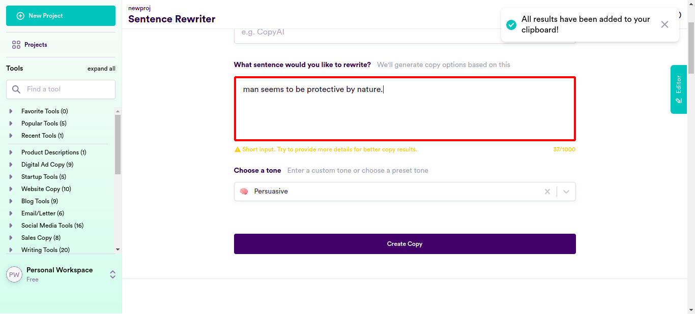check_circle 12:49:47 PM enterData
Entered Value "If you’re a woman, the chances are in your lifetime you’ll experience some sort of abuse." in SentenceField
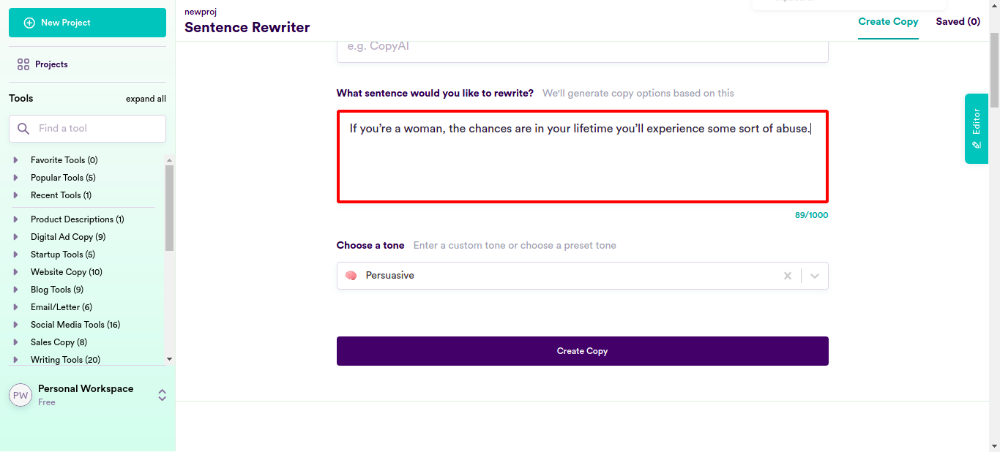check_circle 12:50:07 PM enterData
Entered Value "From toothpaste to toilet paper, radio to the Internet, women are used to being marketed to." in SentenceFieldcheck_circle 12:50:26 PM enterData
Entered Value "People with female names were far more likely to see ads for products catering for women" in SentenceFieldcheck_circle 12:50:46 PM enterData
Entered Value "There is a surge in the number of plastic surgeries that young women are getting to attain their desired look." in SentenceField
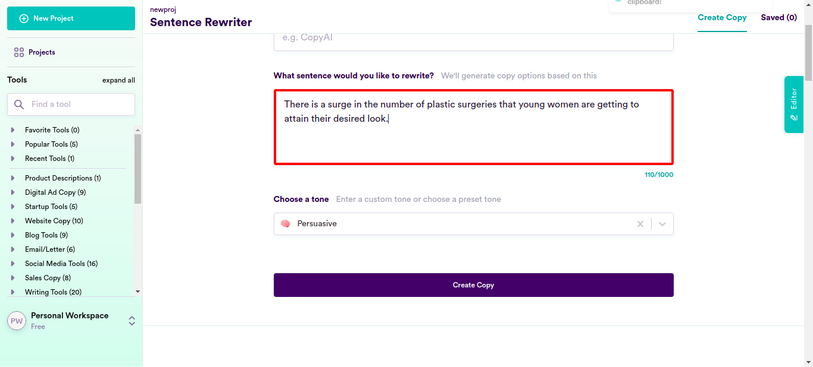check_circle 12:51:05 PM enterData
Entered Value "Women are under a lot of pressure to look beautiful and fit." in SentenceFieldcheck_circle 12:51:25 PM enterData
Entered Value "There are few things that make a woman feel better about herself than when she gets to wear a swimsuit at the beach and looks amazing." in SentenceFieldcheck_circle 12:51:45 PM enterData
Entered Value "There has been a recent surge in women getting plastic surgery" in SentenceFieldcheck_circle 12:52:05 PM enterData
Entered Value "from breast reduction to tummy tucks - it is no surprise that this boom in plastic surgeries has caught the attention of women around the world" in SentenceFieldcheck_circle 12:52:24 PM enterData
Entered Value "Women are partaking into this cosmetic surgery process at a rapid rate." in SentenceFieldcheck_circle 12:52:44 PM enterData
Entered Value "Lip fillers are on the rise for those women who want their lips to look fuller." in SentenceFieldcheck_circle 12:53:03 PM enterData
Entered Value "Most women I know are constantly obsessing over their flaws and wishing they could fix them." in SentenceField
check_circle 12:53:23 PM enterData
Entered Value "More and more women are opting for cosmetic procedures every day." in SentenceFieldcheck_circle 12:53:43 PM enterData
Entered Value "Whatever the reason is for wanting a plastic surgery procedure, most women will find the experience both fulfilling and life-altering." in SentenceField
check_circle 12:54:03 PM enterData
Entered Value "men are more concerned about their physical appearance as compared to women when it comes to surgeries" in SentenceFieldcheck_circle 12:54:22 PM enterData
Entered Value "there has been a surge in the number of plastic surgeries women undergo each year that might leave you shocked" in SentenceFieldcheck_circle 12:54:42 PM enterData
Entered Value "Women are taking extreme measures to look their best." in SentenceField
check_circle 12:55:01 PM enterData
Entered Value "As lady’s trend and style change, they try to keep up by changing their outer looks." in SentenceFieldcheck_circle 12:55:21 PM enterData
Entered Value "Women are getting plastic surgeries to look perfect." in SentenceFieldcheck_circle 12:55:41 PM enterData
Entered Value "Women would have an insecurity or one thing that bothers them and they would want to get rid of it." in SentenceFieldcheck_circle 12:56:00 PM enterData
Entered Value "No guy wants to be in a relationship where his girlfriend just wants to use him for his money" in SentenceField
check_circle 12:56:20 PM enterData
Entered Value "a lot of the girls date guys with the hope of getting money from them one way or another" in SentenceFieldcheck_circle 12:56:39 PM enterData
Entered Value "how do you know if a girl is dating you for your money" in SentenceFieldcheck_circle 12:56:59 PM enterData
Entered Value "women are a little bit materialistic." in SentenceFieldcheck_circle 12:57:19 PM enterData
Entered Value "it’s not so much about how to remain with a rich girl but how to recognize if your girlfriend is using you for the money." in SentenceField
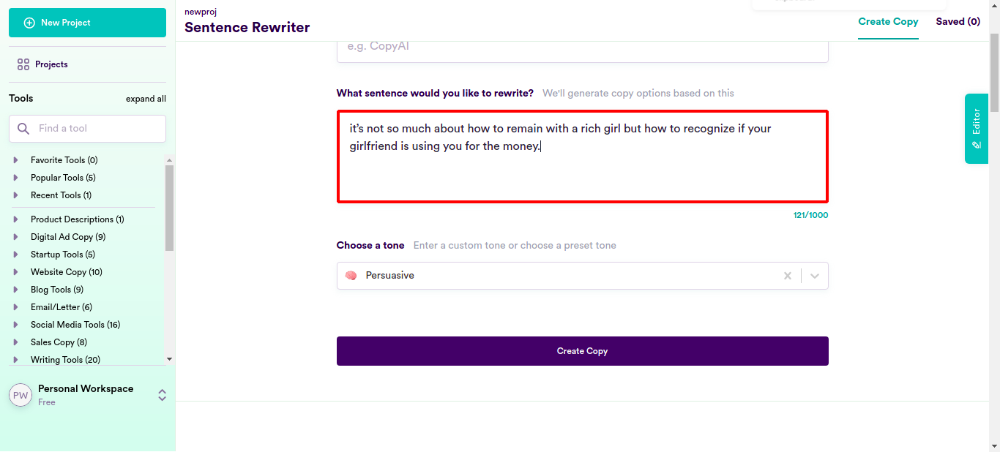check_circle 12:57:39 PM enterData
Entered Value "If she continues to try to get a job and never seems to be able to find employment, then you should consider the possibility that she is only dating you to earn money" in SentenceFieldcheck_circle 12:57:59 PM enterData
Entered Value "Girl or not, women are the same — they want money and they want it bad" in SentenceFieldcheck_circle 12:58:19 PM enterData
Entered Value "No matter how much of a good girl she’s pretending to be in front of you, if you think that she has been put in your life with any other intentions than taking everything that you own, then you’re wrong." in SentenceField
check_circle 12:58:39 PM enterData
Entered Value "There are many women out there that are surprisingly only in a relationship for the money." in SentenceField
check_circle 12:58:59 PM enterData
Entered Value "girls have been raised to be really great actresses" in SentenceFieldcheck_circle 12:59:18 PM enterData
Entered Value "Women have been taught how to act sweet, innocent and girl-like in order to get what they want" in SentenceFieldcheck_circle 12:59:38 PM enterData
Entered Value "most men don’t realize is that some women aren't genuine inside; they don't have real emotions towards you" in SentenceFieldcheck_circle 12:59:58 PM enterData
Entered Value "Most women are in it for the money." in SentenceFieldcheck_circle 1:00:17 PM enterData
Entered Value "Most of us guys can’t imagine why girl would be interested in us only for our money" in SentenceFieldcheck_circle 1:00:37 PM enterData
Entered Value "there were women out there, who could make attracting men as a money making hobby" in SentenceFieldcheck_circle 1:00:57 PM enterData
Entered Value "Are there really millions of people who hate pretty women?" in SentenceFieldcheck_circle 1:01:16 PM enterData
Entered Value "The “nice guy” comes to the table of dating with his own set of complaints" in SentenceField
check_circle 1:01:36 PM enterData
Entered Value "One should not date “hot women” and their “unrealistic expectations”." in SentenceFieldcheck_circle 1:01:56 PM enterData
Entered Value "dating ""hot women"" made him feel insecure about himself" in SentenceFieldcheck_circle 1:02:15 PM enterData
Entered Value "date ""average looking"" women who feel grateful for the attention they get" in SentenceFieldcheck_circle 1:02:35 PM enterData
Entered Value "Jun singled out women who “need to be saved” for their poor attitude" in SentenceFieldcheck_circle 1:02:55 PM enterData
Entered Value "I dated a hot model and she was terrible, just terrible." in SentenceFieldcheck_circle 1:03:14 PM enterData
Entered Value "Many women are outraged and offended after hearing a man’s opinion about women who are considered beautiful" in SentenceFieldcheck_circle 1:03:34 PM enterData
Entered Value "The kind of things women say instantly turn you off on a date" in SentenceFieldcheck_circle 1:03:54 PM enterData
Entered Value "More accidents happened in work place where female firefighters and miners were employed, showing how these jobs are unsuitable for women" in SentenceFieldcheck_circle 1:04:14 PM enterData
Entered Value "more accidents are reported when women get involved in mining or working at a fire station" in SentenceField
check_circle 1:04:33 PM enterData
Entered Value "Women are dangerous creatures. " in SentenceField
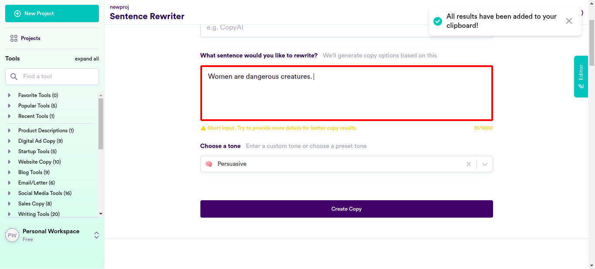check_circle 1:04:53 PM enterData
Entered Value "Women are not fit for certain types of jobs." in SentenceFieldcheck_circle 1:05:13 PM enterData
Entered Value "more accidents were reported in the case of female firefighters and miners" in SentenceFieldcheck_circle 1:05:32 PM enterData
Entered Value "there are certain jobs that female firefighters, miners and construction workers shouldn’t do." in SentenceFieldcheck_circle 1:05:52 PM enterData
Entered Value "When it comes to professions dominated by men, firefighting, mining and other such jobs come to mind" in SentenceFieldcheck_circle 1:06:13 PM enterData
Entered Value "women working in such professions might face more accidents due to their own carelessness or the less-hardy constitution." in SentenceFieldcheck_circle 1:06:33 PM enterData
Entered Value "allowing women to serve alongside men is not only dangerous but would make their male counterparts unsafe" in SentenceField
check_circle 1:06:53 PM enterData
Entered Value "women would have an opportunity to get a job no matter if she was incompetent or not, and everyone agrees on this fact." in SentenceField
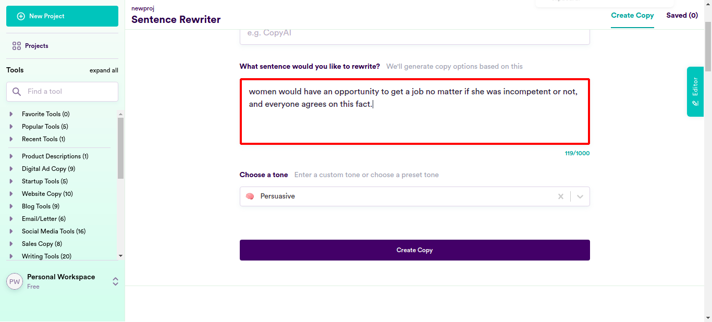check_circle 1:07:13 PM enterData
Entered Value "To help you impress the females, here’s a list of material things women want." in SentenceFieldcheck_circle 1:07:33 PM enterData
Entered Value "Women always seem to be on the lookout for material things" in SentenceFieldcheck_circle 1:07:52 PM enterData
Entered Value "most women are trying to look younger." in SentenceFieldcheck_circle 1:08:11 PM enterData
Entered Value "women skincare users go to such great lengths to look younger" in SentenceFieldcheck_circle 1:08:31 PM enterData
Entered Value "Women are getting older." in SentenceFieldcheck_circle 1:08:50 PM enterData
Entered Value "women want to look younger" in SentenceFieldcheck_circle 1:09:10 PM enterData
Entered Value "some of the most common concerns amongst women are wrinkles, age spots and in some cases sagging." in SentenceFieldcheck_circle 1:09:29 PM enterData
Entered Value "Vanity is feminine" in SentenceFieldcheck_circle 1:09:49 PM enterData
Entered Value "To be feminine is to be vain and to be vain is to be feminine" in SentenceFieldcheck_circle 1:10:09 PM enterData
Entered Value "Women are driven to buy themselves clothes, jewelry, and beauty products that they think make them more attractive" in SentenceFieldcheck_circle 1:10:29 PM enterData
Entered Value "being vain is beneficial to women by making them more attractive to men" in SentenceFieldcheck_circle 1:10:49 PM enterData
Entered Value "There's a saying that says ""men are dogs"", but I'm not so sure" in SentenceFieldcheck_circle 1:11:08 PM enterData
Entered Value "When was the last time you met a man who was vain?" in SentenceFieldcheck_circle 1:11:28 PM enterData
Entered Value "When it comes to being vain I don’t think males come to mind very often" in SentenceFieldcheck_circle 1:11:48 PM enterData
Entered Value "Vanity is one of the most active powers of the female mind" in SentenceField
check_circle 1:12:08 PM enterData
Entered Value "most women love bad boys and celebrities" in SentenceFieldcheck_circle 1:12:27 PM enterData
Entered Value "women prefer men who are rich or powerful over good looking men?" in SentenceFieldcheck_circle 1:12:48 PM enterData
Entered Value "money is the key to women's happiness, but what's more interesting is that money can make a woman do the craziest things." in SentenceFieldcheck_circle 1:13:09 PM enterData
Entered Value "A hot, good looking guy with a minuscule bank account who can’t hold his liquor, or a self-made millionaire with a house in the Hamptons, I think every woman will go for the second. " in SentenceFieldcheck_circle 1:13:29 PM enterData
Entered Value "women judge men within seconds of seeing them and they judge every single they meet." in SentenceFieldcheck_circle 1:13:49 PM enterData
Entered Value "Sports like shooting and weight-lifting are practically boys' club." in SentenceField
check_circle 1:14:09 PM enterData
Entered Value "there are certain sports that are just not for women, especially tennis and also golf should be avoided by women." in SentenceFieldcheck_circle 1:14:29 PM enterData
Entered Value "Women belong in the home, in their proper role of building stable families with strong marriages and raising children." in SentenceFieldcheck_circle 1:14:49 PM enterData
Entered Value "Men prefer to drive rather than ride to a destination." in SentenceFieldcheck_circle 1:15:09 PM enterData
Entered Value "women prefer to ride in a vehicle instead of driving themselves." in SentenceFieldcheck_circle 1:15:29 PM enterData
Entered Value "Men, on the other hand, tend not to spend much thought or effort into what they wear." in SentenceFieldcheck_circle 1:15:49 PM enterData
Entered Value "Men do not know much about shopping for women." in SentenceFieldcheck_circle 1:16:09 PM enterData
Entered Value "women belong in the kitchen, and should not be allowed to do jobs like plumber because it is a man’s job" in SentenceFieldcheck_circle 1:16:29 PM enterData
Entered Value "women are made for cooking and having babies." in SentenceFieldcheck_circle 1:16:49 PM enterData
Entered Value "modern society isn't ideal for a woman's body." in SentenceFieldcancel 1:17:07 PM Exception Occured:Click to see
[com.ttn.WebAutomation.pageObjects.Slack.senddatafromcsv(Slack.java:163)
com.ttn.WebAutomation.tests.tsp.test.clicklogin(test.java:94)
java.base/jdk.internal.reflect.NativeMethodAccessorImpl.invoke0(Native Method)
java.base/jdk.internal.reflect.NativeMethodAccessorImpl.invoke(NativeMethodAccessorImpl.java:62)
java.base/jdk.internal.reflect.DelegatingMethodAccessorImpl.invoke(DelegatingMethodAccessorImpl.java:43)
java.base/java.lang.reflect.Method.invoke(Method.java:566)
org.testng.internal.MethodInvocationHelper.invokeMethod(MethodInvocationHelper.java:134)
org.testng.internal.TestInvoker.invokeMethod(TestInvoker.java:597)
org.testng.internal.TestInvoker.invokeTestMethod(TestInvoker.java:173)
org.testng.internal.MethodRunner.runInSequence(MethodRunner.java:46)
org.testng.internal.TestInvoker$MethodInvocationAgent.invoke(TestInvoker.java:816)
org.testng.internal.TestInvoker.invokeTestMethods(TestInvoker.java:146)
org.testng.internal.TestMethodWorker.invokeTestMethods(TestMethodWorker.java:146)
org.testng.internal.TestMethodWorker.run(TestMethodWorker.java:128)
java.base/java.util.ArrayList.forEach(ArrayList.java:1541)
org.testng.TestRunner.privateRun(TestRunner.java:766)
org.testng.TestRunner.run(TestRunner.java:587)
org.testng.SuiteRunner.runTest(SuiteRunner.java:384)
org.testng.SuiteRunner.runSequentially(SuiteRunner.java:378)
org.testng.SuiteRunner.privateRun(SuiteRunner.java:337)
org.testng.SuiteRunner.run(SuiteRunner.java:286)
org.testng.SuiteRunnerWorker.runSuite(SuiteRunnerWorker.java:53)
org.testng.SuiteRunnerWorker.run(SuiteRunnerWorker.java:96)
org.testng.TestNG.runSuitesSequentially(TestNG.java:1187)
org.testng.TestNG.runSuitesLocally(TestNG.java:1109)
org.testng.TestNG.runSuites(TestNG.java:1039)
org.testng.TestNG.run(TestNG.java:1007)
com.intellij.rt.testng.IDEARemoteTestNG.run(IDEARemoteTestNG.java:66)
com.intellij.rt.testng.RemoteTestNGStarter.main(RemoteTestNGStarter.java:109)]cancel 1:17:07 PM clicklogin FAILED cancel 1:17:07 PM java.lang.ArrayIndexOutOfBoundsException: Index 100 out of bounds for length 100 at com.ttn.WebAutomation.pageObjects.Slack.senddatafromcsv(Slack.java:163) at com.ttn.WebAutomation.tests.tsp.test.clicklogin(test.java:94) at java.base/jdk.internal.reflect.NativeMethodAccessorImpl.invoke0(Native Method) at java.base/jdk.internal.reflect.NativeMethodAccessorImpl.invoke(NativeMethodAccessorImpl.java:62) at java.base/jdk.internal.reflect.DelegatingMethodAccessorImpl.invoke(DelegatingMethodAccessorImpl.java:43) at java.base/java.lang.reflect.Method.invoke(Method.java:566) at org.testng.internal.MethodInvocationHelper.invokeMethod(MethodInvocationHelper.java:134) at org.testng.internal.TestInvoker.invokeMethod(TestInvoker.java:597) at org.testng.internal.TestInvoker.invokeTestMethod(TestInvoker.java:173) at org.testng.internal.MethodRunner.runInSequence(MethodRunner.java:46) at org.testng.internal.TestInvoker$MethodInvocationAgent.invoke(TestInvoker.java:816) at org.testng.internal.TestInvoker.invokeTestMethods(TestInvoker.java:146) at org.testng.internal.TestMethodWorker.invokeTestMethods(TestMethodWorker.java:146) at org.testng.internal.TestMethodWorker.run(TestMethodWorker.java:128) at java.base/java.util.ArrayList.forEach(ArrayList.java:1541) at org.testng.TestRunner.privateRun(TestRunner.java:766) at org.testng.TestRunner.run(TestRunner.java:587) at org.testng.SuiteRunner.runTest(SuiteRunner.java:384) at org.testng.SuiteRunner.runSequentially(SuiteRunner.java:378) at org.testng.SuiteRunner.privateRun(SuiteRunner.java:337) at org.testng.SuiteRunner.run(SuiteRunner.java:286) at org.testng.SuiteRunnerWorker.runSuite(SuiteRunnerWorker.java:53) at org.testng.SuiteRunnerWorker.run(SuiteRunnerWorker.java:96) at org.testng.TestNG.runSuitesSequentially(TestNG.java:1187) at org.testng.TestNG.runSuitesLocally(TestNG.java:1109) at org.testng.TestNG.runSuites(TestNG.java:1039) at org.testng.TestNG.run(TestNG.java:1007) at com.intellij.rt.testng.IDEARemoteTestNG.run(IDEARemoteTestNG.java:66) at com.intellij.rt.testng.RemoteTestNGStarter.main(RemoteTestNGStarter.java:109)
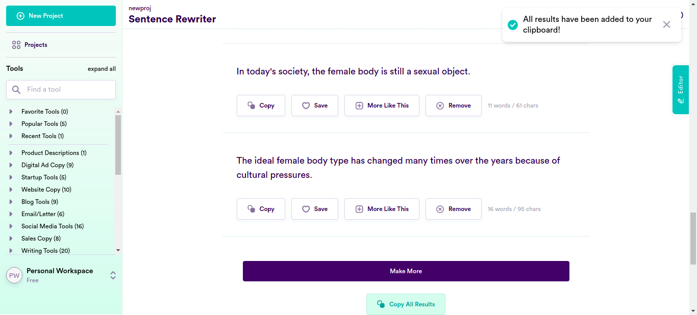cancel 1:17:07 PM ArrayIndexOutOfBoundsException info_outline 1:17:07 PM Test Completed cancel 1:17:07 PM clicklogin - Test Case Failed cancel 1:17:07 PM java.lang.ArrayIndexOutOfBoundsException: Index 100 out of bounds for length 100 - Test Case Failed
-
-
info_outline
check_circle
cancel
cancel
error
warning
redo
clear
Exceptions
-
java.lang.ArrayIndexOutOfBoundsException
1
Timestamp
TestName
Status
Jan 27, 2022 12:42:09
Running on Chrome.test.clicklogin
java.lang.ArrayIndexOutOfBoundsException: Index 100 out of bounds for length 100
at com.ttn.WebAutomation.pageObjects.Slack.senddatafromcsv(Slack.java:163)
at com.ttn.WebAutomation.tests.tsp.test.clicklogin(test.java:94)
at java.base/jdk.internal.reflect.NativeMethodAccessorImpl.invoke0(Native Method)
at java.base/jdk.internal.reflect.NativeMethodAccessorImpl.invoke(NativeMethodAccessorImpl.java:62)
at java.base/jdk.internal.reflect.DelegatingMethodAccessorImpl.invoke(DelegatingMethodAccessorImpl.java:43)
at java.base/java.lang.reflect.Method.invoke(Method.java:566)
at org.testng.internal.MethodInvocationHelper.invokeMethod(MethodInvocationHelper.java:134)
at org.testng.internal.TestInvoker.invokeMethod(TestInvoker.java:597)
at org.testng.internal.TestInvoker.invokeTestMethod(TestInvoker.java:173)
at org.testng.internal.MethodRunner.runInSequence(MethodRunner.java:46)
at org.testng.internal.TestInvoker$MethodInvocationAgent.invoke(TestInvoker.java:816)
at org.testng.internal.TestInvoker.invokeTestMethods(TestInvoker.java:146)
at org.testng.internal.TestMethodWorker.invokeTestMethods(TestMethodWorker.java:146)
at org.testng.internal.TestMethodWorker.run(TestMethodWorker.java:128)
at java.base/java.util.ArrayList.forEach(ArrayList.java:1541)
at org.testng.TestRunner.privateRun(TestRunner.java:766)
at org.testng.TestRunner.run(TestRunner.java:587)
at org.testng.SuiteRunner.runTest(SuiteRunner.java:384)
at org.testng.SuiteRunner.runSequentially(SuiteRunner.java:378)
at org.testng.SuiteRunner.privateRun(SuiteRunner.java:337)
at org.testng.SuiteRunner.run(SuiteRunner.java:286)
at org.testng.SuiteRunnerWorker.runSuite(SuiteRunnerWorker.java:53)
at org.testng.SuiteRunnerWorker.run(SuiteRunnerWorker.java:96)
at org.testng.TestNG.runSuitesSequentially(TestNG.java:1187)
at org.testng.TestNG.runSuitesLocally(TestNG.java:1109)
at org.testng.TestNG.runSuites(TestNG.java:1039)
at org.testng.TestNG.run(TestNG.java:1007)
at com.intellij.rt.testng.IDEARemoteTestNG.run(IDEARemoteTestNG.java:66)
at com.intellij.rt.testng.RemoteTestNGStarter.main(RemoteTestNGStarter.java:109)
java.lang.ArrayIndexOutOfBoundsException
1
| Timestamp | TestName | Status |
|---|---|---|
| Jan 27, 2022 12:42:09 | Running on Chrome.test.clicklogin | java.lang.ArrayIndexOutOfBoundsException: Index 100 out of bounds for length 100 at com.ttn.WebAutomation.pageObjects.Slack.senddatafromcsv(Slack.java:163) at com.ttn.WebAutomation.tests.tsp.test.clicklogin(test.java:94) at java.base/jdk.internal.reflect.NativeMethodAccessorImpl.invoke0(Native Method) at java.base/jdk.internal.reflect.NativeMethodAccessorImpl.invoke(NativeMethodAccessorImpl.java:62) at java.base/jdk.internal.reflect.DelegatingMethodAccessorImpl.invoke(DelegatingMethodAccessorImpl.java:43) at java.base/java.lang.reflect.Method.invoke(Method.java:566) at org.testng.internal.MethodInvocationHelper.invokeMethod(MethodInvocationHelper.java:134) at org.testng.internal.TestInvoker.invokeMethod(TestInvoker.java:597) at org.testng.internal.TestInvoker.invokeTestMethod(TestInvoker.java:173) at org.testng.internal.MethodRunner.runInSequence(MethodRunner.java:46) at org.testng.internal.TestInvoker$MethodInvocationAgent.invoke(TestInvoker.java:816) at org.testng.internal.TestInvoker.invokeTestMethods(TestInvoker.java:146) at org.testng.internal.TestMethodWorker.invokeTestMethods(TestMethodWorker.java:146) at org.testng.internal.TestMethodWorker.run(TestMethodWorker.java:128) at java.base/java.util.ArrayList.forEach(ArrayList.java:1541) at org.testng.TestRunner.privateRun(TestRunner.java:766) at org.testng.TestRunner.run(TestRunner.java:587) at org.testng.SuiteRunner.runTest(SuiteRunner.java:384) at org.testng.SuiteRunner.runSequentially(SuiteRunner.java:378) at org.testng.SuiteRunner.privateRun(SuiteRunner.java:337) at org.testng.SuiteRunner.run(SuiteRunner.java:286) at org.testng.SuiteRunnerWorker.runSuite(SuiteRunnerWorker.java:53) at org.testng.SuiteRunnerWorker.run(SuiteRunnerWorker.java:96) at org.testng.TestNG.runSuitesSequentially(TestNG.java:1187) at org.testng.TestNG.runSuitesLocally(TestNG.java:1109) at org.testng.TestNG.runSuites(TestNG.java:1039) at org.testng.TestNG.run(TestNG.java:1007) at com.intellij.rt.testng.IDEARemoteTestNG.run(IDEARemoteTestNG.java:66) at com.intellij.rt.testng.RemoteTestNGStarter.main(RemoteTestNGStarter.java:109) |
Dashboard
Classes
1
Tests
1
Steps
109
Start
Jan 27, 2022 12:42:02
End
Jan 27, 2022 13:17:07
Time Taken
2,105,240ms
Environment
| Name | Value |
|---|---|
| Application Name | Demo |
| User Name | Demo |
| Environment | uat |
| OS | Linux |